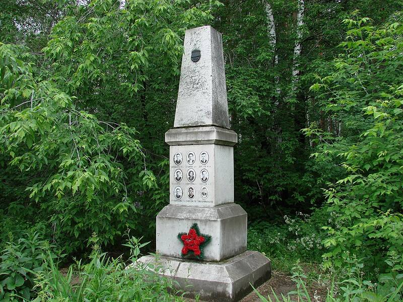

Dyatlov Pass
Northern Urals, Russia, 1959

Nine hikers died here in February 1959 after fleeing their tent at night. Reports of orange spheres fed UFO theories, but Russian investigators concluded in 2020 that an avalanche was the most likely cause. 1
Open in the interactive Watcher
Related
Sources
- Dyatlov Pass incident Wikipedia